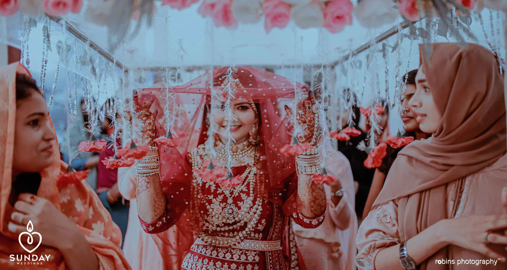

.jpg)

Robins Photography
Experience the magic of Kerala's finest wedding photography and videography company! At Robins Photography, we understand the importance of your special day and strive to create stunning visual narratives that will be cherished for a lifetime. Our team of highly skilled wedding photographers and videographers will capture every precious moment with precision and artistry.As the best wedding photography company in Kochi, Kasaragod, Malappuram, and all over Kerala, we are committed to delivering exceptional quality. Our photographers have an impeccable eye for detail and a passion for storytelling, ensuring that your wedding album is a work of art. We believe that every couple deserves to have their dream wedding captured in the most beautiful way possible.

Robin's Photography stands out as a premier choice for capturing the essence of Kerala weddings through a unique blend of creativity and cultural understanding. Our commitment to delivering the best extends to our distinctive style, attention to detail, and adaptability to diverse wedding traditions, making us a top preference for couples seeking a memorable photography experience.
Robin's Photography distinguishes itself by its exceptional skills and a deep understanding of the cultural nuances of Kerala weddings. Our portfolio showcases a diverse range of weddings, highlighting our ability to capture moments with a unique and personalized touch, setting us apart from other wedding photographers in the region.
Our customizable packages for wedding photography in Kochi are designed to cater to your specific preferences. They may include pre-wedding shoots, full-day coverage, and high-quality photo albums, ensuring a personalized and comprehensive experience that aligns with your vision for the perfect wedding album.
Robin's Photography has earned a reputation as the preferred choice for destination weddings in Kerala due to our extensive experience and genuine passion for showcasing the unique beauty of the region. Couples trust us to capture the magic of their destination wedding, creating timeless memories against the backdrop of Kerala's enchanting landscapes.
At Robin's Photography, we employ a versatile blend of documentary, candid, and traditional styles to capture the full spectrum of emotions and moments during a wedding. This approach ensures a diverse and visually appealing wedding album that tells the complete story of your special day with authenticity and creativity.
To ensure the highest quality images, Robin's Photography utilizes state-of-the-art cameras, lenses, and advanced editing software. Our commitment to staying at the forefront of technology allows us to deliver wedding photos that stand out in terms of clarity, color, and overall visual appeal.
While awards are gratifying, our true recognition comes from the satisfaction of our clients. Positive feedback, referrals, and the trust placed in us by couples to document their special day serve as the most meaningful acknowledgments of our commitment to excellence in wedding photography.
Our post-processing techniques are geared towards enhancing the overall quality of wedding photos in Kerala. We employ advanced editing methods to refine colors, improve clarity, and ensure that each photograph captures the beauty and emotion of the moment, resulting in a stunning and timeless wedding album.
At Robin's Photography, we approach each wedding with cultural sensitivity and a deep understanding of the diverse traditions in Kerala. Our goal is to incorporate these cultural aspects seamlessly into our photography, ensuring an authentic representation of the couple's heritage and the richness of Kerala's cultural tapestry.
To secure our services for your wedding in Kerala, simply reach out to us through our website or direct contact. We recommend making reservations well in advance, especially during peak wedding seasons, to ensure availability on your chosen date.

Rishin Ck

Wow true professionals. Had a wonderful experience with them. Thank you guys for all energetic and trending works.. I would highly recommend Robins photography for any of your photography needs .

Fathima hanan
Robins photography did a fabulous job in covering our wedding and reception . The team was very accommodating, friendly and easy to work with. Also, our post-wedding shoot was really dreamy.

Aiswarya Nair
Wedding photography would remain incomplete without them, who are they? One among the very best I have had the fortune to come across for my special day. Looking at the moments captured by them, makes me want to relive that day over and over again.
Arjun S
No words to express our gratitude to this team! We had them for our Haldi ceremony ,Wedding which happened in Kerala and Reception in Kolkata. The team were super personable,energetic and talented. They made sure we are comfortable and captured some captivating photographs. It was super fun having them.

George jp
Initially, we were looking around for the best for our big event! After googling many companies, we decided to move ahead with Robins photography based on the quality, worked by them for other wedding videos & photography. But no regrets. Quality and perfection are awesome.

Harikrisnan s
We can’t thank you enough Robins photography for everything which you guys have done for us starting from our engagement to the wedding!! Our wedding was the best day of our lives and we’re so glad that you were a part of it, capturing all those precious moments from start to finish.